# adatok beolvasása R-ben
fogyaszto <- rio::import(file = "adat/klaszter_fogyaszto.xlsx")
str(fogyaszto)
#> 'data.frame': 20 obs. of 6 variables:
#> $ v1: num 6 2 7 4 1 6 5 7 2 3 ...
#> $ v2: num 4 3 2 6 3 4 3 3 4 5 ...
#> $ v3: num 7 1 6 4 2 6 6 7 3 3 ...
#> $ v4: num 3 4 4 5 2 3 3 4 3 6 ...
#> $ v5: num 2 5 1 3 6 3 3 1 6 4 ...
#> $ v6: num 3 4 3 6 4 4 4 4 3 6 ...
psych::headTail(fogyaszto)
#> v1 v2 v3 v4 v5 v6
#> 1 6 4 7 3 2 3
#> 2 2 3 1 4 5 4
#> 3 7 2 6 4 1 3
#> 4 4 6 4 5 3 6
#> ... ... ... ... ... ... ...
#> 17 4 4 7 2 2 5
#> 18 3 7 2 6 4 3
#> 19 4 6 3 7 2 7
#> 20 2 3 2 4 7 27 Klaszterelemzés
A klaszteranalízis célja, hogy értelmes és használható csoportokba (klaszterekbe) sorolja az adatokat. Úgy alakíthatunk ki csoportokat az \(n\) elemű mintánkban, hogy a “hasonlóak” egy csoportba kerülnek. Minden klaszter elemei viszonylag hasonlóak legyenek egymáshoz, de különbözzenek más klaszterek elemeitől.
Fogalmak:
- Összevonási séma: Megmutatja, hogy a hierarchikus klaszterelemzés egyes lépéseinél mely megfigyelési egységek vagy esetek kerültek összevonásra.
- Klaszterközép: Az összes megfigyelési egységet alapul véve a változók átlaga egy adott klaszterben.
- Klaszterközéppont: A nem hierarchikus klaszterelemzés kiindulópontjai. A klasztereket ezen középpontok vagy magok köré építi az eljárás.
- Dendrogram: Fadiagramnak is szokás nevezni, amely a klaszterelemzés eredményeinek grafikus ábrázolása. A függőleges vonalak az összetartozó klasztereket jelölik. A vonalak skálán való elhelyezkedése megmutatja az összevont klaszterek közötti távolságot.
- A klaszterközéppontok közötti távolságok. Megmutatják, mennyire különböznek a klaszterek egymástól. Kívánatos, hogy a klaszterek egymástól jól elkülönüljenek és jól jellemezhetőek legyenek.
- Hasonlósági/távolsági együtthatók mátrixa: A hasonlósági/távolsági együtthatók mátrixa egy alsó/felső háromszögmátrix, amely a megfigyelési egységek vagy esetek közötti páronkénti távolságot tartalmazza.
A klaszterelemzés több lépésből áll:
- A probléma megfogalmazása
- Távolságmérték kiválasztása
- Klasztermódszer kiválasztása
- Döntés klaszterek számáról
- A klaszterek értelmezése és jellemzése
- A klaszterelemzés érvényességének ellenőrzése
A fenti folyamatot egy példán mutatjuk be: Malhotra és Simon (2008, o. 642).
7.1 Példa: Fogyasztók vásárlással kapcsolatos attitűdjei
7.1.1 1. A probléma megfogalmazása
Ebben a példában fogyasztókat vásárlással kapcsolatos attitűdjeik alapján szeretnénk csoportosítani. Összesen hat, attitűdváltozót vettek figyelembe: megkérték őket, hogy fejezzék ki a következő állításokkal kapcsolatban egy hétfokozatú skálán az egyetértésüket:
- v1: A vásárlás szórakozás.
- v2: A vásárlás nem tesz jót a pénztárcának.
- v3: A vásárlást gyakran összekötöm étteremlátogatással.
- v4: Vásárláskor megpróbálom a legjobb vételt csinálni.
- v5: Nem érdekel a vásárlás.
- v6: Az árak összehasonlításával rengeteg pénzt lehet megtakarítani.
Az adatok a klaszter_fogyaszto.xlsx Excel állományban találhatók.
7.1.2 2. Távolsági vagy hasonlósági mérték kiválasztása
Mivel a klaszterelemzés célja, hogy a hasonló megfigyelési egységek egy csoportba kerüljenek, szükségünk van egy mérőszámra, azaz a hasonlóság vagy különbség számszerűsítésére.
A klaszteranalízis kiindulópontja tehát az elemek közötti hasonlóság vagy távolság. Ezzel kapcsolatban általában rendelkezünk előzetes információkkal, amelyek alapján kiszámítjuk ezeket a hasonlóságokat vagy távolságokat. Más esetekben csak a hasonlóságok vagy távolságok mértékéről rendelkezünk információkkal.
A legelterjedtebb módszer a hasonlóság mérésére a megfigyelési egységek páronkénti távolsága. Azok a megfigyelési egységek, amelyek között kisebb a távolság hasonlóbbak egymáshoz, mint azok, amelyek között nagyobb. Megjegyezzük, hogy a hasonlóság és a távolság egymással ellentétes fogalmak. Ebből a kapcsolatból adódik, hogy a hasonlóság és a távolság mérőszáma egymásba átalakítható. Ennek képlete a következő:
\[h_{ij}=100\frac{d_{max}−d_{ij}}{d_{max}}\] A képletben a \(h_{ij}\) jelöli az \(i\)-edik és a \(j\)-edik objektum közötti hasonlóságot, míg a \(d_{ij}\) a távolságot, a \(d_{max}\) pedig a távolságmátrix legnagyobb elemét jelöli.
A legelterjedtebb távolsági mérték az euklideszi távolság: az egyes változók értékei közötti különbség négyzetösszegének a négyzetgyöke. További távolságmértékek is léteznek.
Ebben a példában az Euklideszi távolságot használjuk.
# Euklideszi távolság kiszámítása a
tavolsagmatrix <- dist(fogyaszto, method = "euclidean")
tavolsagmatrix
#> 1 2 3 4 5 6 ...
#> 2 8.000000 ...
#> 3 2.828427 8.246211 ...
#> 4 5.567764 5.567764 6.557439 ...
#> 5 8.306624 2.645751 9.110434 6.633250 ...
#> 6 1.732051 6.855655 3.316625 4.472136 7.211103 ...
#> 7 2.236068 6.244998 3.316625 4.690416 6.480741 1.414214 ...
#> 8 2.236068 8.774964 1.732051 6.000000 9.486833 2.828427 3.16...
#> 9 6.928203 2.828427 8.000000 5.567764 2.236068 5.916080 5.38...
#> 10 6.928203 4.242641 7.483315 2.236068 5.744563 5.744563 5.56...
#> 11 7.745967 2.000000 8.366600 6.244998 1.732051 6.855655 6.08...
#> 12 2.645751 5.916080 3.316625 3.464102 6.782330 2.000000 2.00...
#> 13 8.062258 1.732051 7.810250 5.830952 4.000000 7.071068 6.32...
#> 14 6.782330 6.000000 7.615773 1.732051 7.141428 5.567764 5.74...
#> 15 3.605551 7.000000 4.358899 4.690416 7.615773 3.162278 3.74...
#> 16 6.928203 5.291503 7.615773 2.236068 6.403124 5.744563 5.56...
#> 17 3.000000 7.416198 4.795832 4.898979 7.211103 2.828427 2.44...
#> 18 7.483315 4.898979 8.366600 4.123106 6.403124 6.708204 6.85...
#> 19 7.483315 6.633250 7.745967 2.645751 8.306624 6.557439 6.70...
#> 20 8.306624 3.000000 8.888194 7.071068 3.162278 7.348469 6.78...
#> 8 9 10 11 12 13 ...
#> 2 ...
#> 3 ...
#> 4 ...
#> 5 ...
#> 6 ...
#> 7 ...
#> 8 ...
#> 9 8.306624 ...
#> 10 7.280110 4.898979 ...
#> 11 8.888194 2.000000 5.291503 ...
#> 12 3.162278 5.567764 4.582576 6.082763 ...
#> 13 8.485281 4.123106 4.358899 3.000000 5.830952 ...
#> 14 7.000000 6.164414 2.000000 6.928203 4.795832 6.244998 ...
#> 15 4.242641 6.708204 6.244998 7.141428 2.828427 7.211103 6.24...
#> 16 7.141428 5.656854 1.414214 6.164414 4.795832 5.385165 1.41...
#> 17 4.000000 6.403124 6.244998 7.000000 3.162278 7.615773 6.08...
#> 18 8.426150 4.898979 3.741657 5.477226 5.567764 5.385165 4.69...
#> 19 7.280110 7.483315 2.828427 7.745967 5.196152 6.403124 2.44...
#> 20 9.486833 2.236068 5.916080 2.645751 6.928203 4.000000 7.41...
#> 15 16 17 18 19
#> 2
#> 3
#> 4
#> 5
#> 6
#> 7
#> 8
#> 9
#> 10
#> 11
#> 12
#> 13
#> 14
#> 15
#> 16 6.557439
#> 17 4.000000 5.916080
#> 18 6.557439 4.898979 7.681146
#> 19 6.403124 2.828427 7.000000 4.898979
#> 20 8.246211 6.855655 8.246211 5.567764 8.5440047.1.3 3. A klasztermódszer kiválasztása
Számos eljárás született a klaszteranalízis módszerén belül. Ebben a könyvben két eljárással foglalkozunk részletesen:
- a hierarchikus eljárások: hierarchikus, faszerű felépítéssel jellemezhetők
- összevonó: kiinduláskor minden elem külön klasztert alkot. A klaszterek képzése úgy történik, hogy a klasztereket egyre nagyobb klaszterekbe vonják össze.
- láncmódszerek: az elemeket a köztük lévő távolság kiszámíása alapján csoportosítjuk
- egyszerű lánc: a minimális távolság, vagyis a legközelebbi szomszéd elvén alapul
- teljes lánc: a maximális távolság, vagyis a legtávolabb szomszéd elvén alapul
- átlagos lánc: két klaszter távolságát az összes elem páronkénti távolságának átlagából számítja ki.
- variancia-módszer: ahol a klasztereket oly módon képzik, hogy a klasztereken belül a szórásnégyzetet minimalizálják
- Ward-féle eljárás: a klaszterátlagoktól való négyzetes euklideszi távolságot minimalizálják
- centroidmódszer: a klaszeterek közötti távolságot az összes változó átlagaként számított centroidok közötti távolságként határozzák meg.
- láncmódszerek: az elemeket a köztük lévő távolság kiszámíása alapján csoportosítjuk
- felosztó: kiinduláskor az összes elem egyetlen egy klasztert alkot. A klaszterek képzése úgy történik, hogy a klasztereket egyre kisebb klaszterekre osztják fel.
- összevonó: kiinduláskor minden elem külön klasztert alkot. A klaszterek képzése úgy történik, hogy a klasztereket egyre nagyobb klaszterekbe vonják össze.
- K-középpontú klaszteranalízis: olyan eljárás, amely előre meghatározott klaszterközéppontból indul ki, és úgy csoportosítja az elemeket, hogy a középponttól számított küszöbértéken belül essenek.
- szekvenciális küszöbértékek: kiválasztanak egy klaszterközéppontot, és minden megfigyelési egység, amely a középponttól az előre meghatározott küszöbértéken belül esik, azonos csoportba kerül. Ezután új küszöbértéket választanak és a folyamatot megismétlik a még nem csoportosított pontokra. Egy korábban már csoportosított megfigyelési egységet nem fognak újra csoportosítani.
- párhuzamos küszöbértékek: az előző módszertől annyiban tér el, hogy a klaszterközéppontokat egyidejűleg választják ki és a küszöbértékeken belüli megfigyelési egységeket a legközelebb eső középponthoz rendelik.
- az optimális felosztás módszere: abban különbözik a két fenti módszertől, hogy a megfigyelési egységeket újra hozzárendelik a klaszterhez, hogy egy általános kritériumot (például adott számú klaszterre a klaszteren belüli távolságok átlagát) optimalizáljanak.
A K-középpontú klaszterelemzés hátránya, hogy a klaszterek számát előre meg kell adni, és a klaszterközéppontok kiválasztása esetleges. Azonban ez az eljárás gyorsabb, mint a hierarchikus eljárás és főképp nagy mintaelemszám esetén javasolt a használata.
Célszerű a hierarchikus és nem hierarchikus módszereket egymásra építve alkalmazni. Először a hierarchikus klaszterelemzéssel, az átlagos lánc vagy Ward-féle módszert felhasználva egy kiinduló klasztermegoldáshoz jutunk. A kapott klaszterszámot és a klaszterközéppontokat inputként felhasználhatjuk az optimális felosztás módszeréhez.
Most a hierarchikus klaszterelemzést szemléltetjük Ward-féle eljárással.
# hierarchikus klaszterelemzés R-ben
klaszter <- hclust(tavolsagmatrix, method = "ward.D2")
plot(klaszter)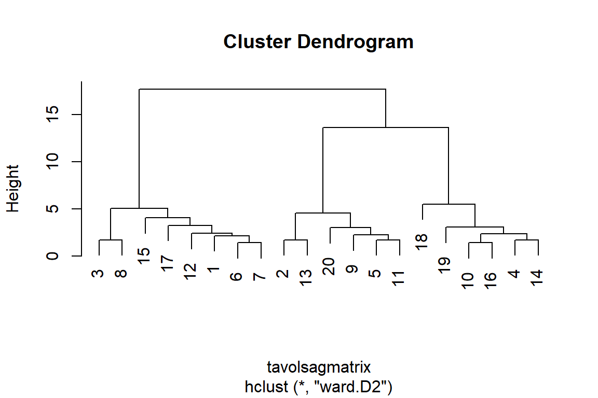
A klaszterelemzés eredményének értékes ábrája a dendrogram. A fenti ábrán a vízszintes vonalak az összevont klasztereket ábrázolják. A vonal skálán való elhelyezkedése azt a távolságot mutatja meg, ahol a klasztereket összevonták. Mivel a kezdeti lépésekben a távolságok hasonló méretűek, nehéz megmondani, milyen sorrendben alakultak ki a klaszterek. Erről a pontosabb információt a következő parancsokkal kaphatunk.
klaszter$merge # az összevonások lépései: az egyes lépésekben miket vont össze: negatív szám elem, pozitív klaszter
#> [,1] [,2]
#> [1,] -6 -7
#> [2,] -10 -16
#> [3,] -2 -13
#> [4,] -3 -8
#> [5,] -4 -14
#> [6,] -5 -11
#> [7,] -1 1
#> [8,] -9 6
#> [9,] 2 5
#> [10,] -12 7
#> [11,] -20 8
#> [12,] -19 9
#> [13,] -17 10
#> [14,] -15 13
#> [15,] 3 11
#> [16,] 4 14
#> [17,] -18 12
#> [18,] 15 17
#> [19,] 16 18
klaszter$height # az egyes összevonások milyen távolság esetén történtek meg
#> [1] 1.414214 1.414214 1.732051 1.732051 1.732051 1.732051
#> [7] 2.160247 2.236068 2.345208 2.415229 3.000000 3.082207
#> [13] 3.271085 4.057914 4.582576 5.033223 5.507571 13.638182
#> [19] 17.659747
cbind(klaszter$merge, klaszter$height) # együtt a két fenti információ
#> [,1] [,2] [,3]
#> [1,] -6 -7 1.414214
#> [2,] -10 -16 1.414214
#> [3,] -2 -13 1.732051
#> [4,] -3 -8 1.732051
#> [5,] -4 -14 1.732051
#> [6,] -5 -11 1.732051
#> [7,] -1 1 2.160247
#> [8,] -9 6 2.236068
#> [9,] 2 5 2.345208
#> [10,] -12 7 2.415229
#> [11,] -20 8 3.000000
#> [12,] -19 9 3.082207
#> [13,] -17 10 3.271085
#> [14,] -15 13 4.057914
#> [15,] 3 11 4.582576
#> [16,] 4 14 5.033223
#> [17,] -18 12 5.507571
#> [18,] 15 17 13.638182
#> [19,] 16 18 17.659747A fenti outputból kiolvasható, hogy 19 lépésben jutottunk el az 1 klaszteres struktúrához. Az első két oszlopban az összevont elemek vagy más kialakított klaszterek azonosítója szerepel. Negatív azonosító az objektum adatbázisban elfoglalt helyét mutatja, a pozitív azonosító pedig azt a klasztert, amelyet a hivatkozott lépésben alakítottunk ki. A 3.oszlopban azt a távolságot láthatjuk, amelyen az összevonás történt.
Világos, hogy az utolsó két lépésben az összevont klaszterek közötti távolság nagy. Ez az információ hasznos lehet a klaszterek számának eldöntésénél.
A fenti elemzés jamovi-ban a snowCluster / Hierarchical Clustering vagy snowCluster / Clustering Dendrogram menüpontjaival is elvégezhető.
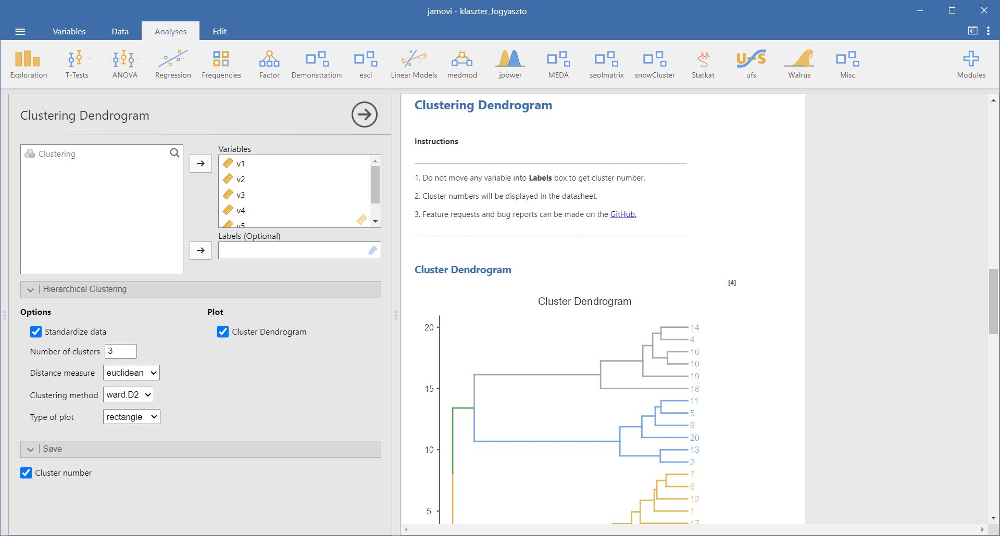
Amennyiben K-középpontú klaszterelemzést szeretnénk végrehajtani, akkor ismerettel kell rendelkezünk a klaszterek számáról. A korábbi hierarchikus klaszterelemzés eredménye alapján a 3 klaszteres megoldás mellett döntünk. A kiinduló klaszterközéppontokat az első három véletlenszerűen választott eset értéke adja. A csoportosítás középpontjai ideiglenes középpontok, amelyekhez eseteket rendel hozzá az algoritmus. Mindegyik esetet a legközelebbi középponthoz rendeli. A klasszifikációs középpontokat mindig módosítják, amíg egy határértéket el nem érnek. A végső klaszterközéppontok a változók átlagait tükrözik a végleges megoldásban.
kkozep <- kmeans(x = tavolsagmatrix, centers = 3)
kkozep
#> K-means clustering with 3 clusters of sizes 6, 8, 6
#>
#> Cluster means:
#> 1 2 3 4 5 6 7
#> 1 6.862188 5.439023 7.564144 2.162174 6.772019 5.799111 5.855728
#> 2 2.285490 7.306763 2.958135 5.042656 7.775617 2.160253 2.290041
#> 3 7.891613 2.034372 8.403615 6.152633 2.296025 6.876338 6.216759
#> 8 9 10 11 12 13 14
#> 1 7.187966 5.778384 2.036728 6.308718 4.733710 5.601384 2.047695
#> 2 2.670468 6.651896 6.259566 7.270421 2.389420 7.301405 6.229253
#> 3 8.904788 2.237278 5.075444 1.896300 6.184682 2.809193 6.649207
#> 15 16 17 18 19 20
#> 1 6.116402 2.131984 6.303994 3.725523 2.608512 6.895128
#> 2 3.242432 6.283385 3.029503 7.205784 6.796789 8.029135
#> 3 7.320453 5.959452 7.315402 5.438540 7.519380 2.507349
#>
#> Clustering vector:
#> 1 2 3 4 5 6 7 8 9 10 11 12 13 14 15 16 17 18 19 20
#> 2 3 2 1 3 2 2 2 3 1 3 2 3 1 2 1 2 1 1 3
#>
#> Within cluster sum of squares by cluster:
#> [1] 120.51554 170.68012 77.21363
#> (between_SS / total_SS = 82.1 %)
#>
#> Available components:
#>
#> [1] "cluster" "centers" "totss" "withinss"
#> [5] "tot.withinss" "betweenss" "size" "iter"
#> [9] "ifault"
kkozep$totss
#> [1] 2063.469
fogyaszto$group_2 <- kkozep$cluster # a kapott csoportváltozó beszúrása
table(fogyaszto$group_2)
#>
#> 1 2 3
#> 6 8 6A fenti eredmény a klaszteranalízis eredményét mutatja. Az első sor (K-means clustering with 3 clusters of sizes 8, 6, 6) arról ad információt, hogy háromklaszteres megoldásunk van, melyek mérete 8, illetve 6 és 6 elemszám. Hogy az egyes elemek melyik klaszterbe esnek, arról a Clustering vector ad információt. Az első sor az egyes elemeket, a második pedig a csoporttagságot mutatja.
A Cluster means az egyes klaszterek átlagos tagjának, centroidjának a jellemzőit mutatják. A Within cluster sum of squares by cluster értékei a klaszteren belüli eltérések négyzetösszegét mutatja.
A fenti K-közép klaszterelemzés jamovi-ban is elvégezhető a snowCluster / K-means Clustering menüponttal.
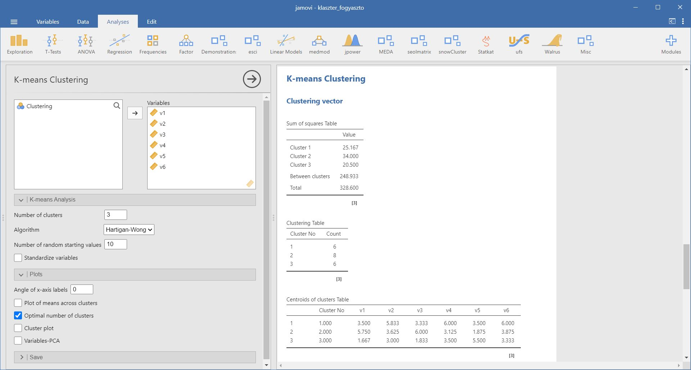 ### 4. Döntés a klaszterek számáról
A klaszterelemzés egyik legfontosabb kérdése a klaszterek számának eldöntése. Milyen általános szabályok alapján dönthetünk:
- Elméleti vagy gyakorlati megfontolások alapján dönthetünk a klaszterek számáról.
- Hierarchikus klaszterelemzés során a klaszterek összevonására alkalmazott távolságok felhasználhatók kritériumként. A dendrogramból kiolvasható ez az információ. Az utolsó lépésnél az összevont klaszterek között nagy a távolság. Ebből következően a háromklaszteres megoldás tűnik megfelelőnek.
- A nem hierarchikus klaszterelemzésénél a belső és a külső variancia hányadosát ábrázolják a klaszterek számának függvényében. Az a pont, ahol egy könyök vagy éles törés látható, a megfelelő klaszterek számára utal. E ponton túl nem érdemes a klaszterek számát növelni.
- A klaszterek relatív méretét is érdemes figyelembe venni. Az egyelemű vagy túl kicsi gyakoriságú csoportoknak nincs értelme.
Amennyiben a klaszterek összevonásánál használt távolságokat használjuk, akkor egy 10-es távolságot beállítva 3 csoportot képezhetünk:
fogyaszto$group_1 <- cutree(tree = klaszter, h = 10)
table(fogyaszto$group_1)
#>
#> 1 2 3
#> 8 6 6Látható, hogy az egyes csoportok 8, 6 és 6 elemet tartalmaznak.
A fenti 3 csoportnak megfelelő dendrogramot a {factoextra} csomaggal is megjeleníthetjük.
hc <- factoextra::hcut(fogyaszto, 3, stand = FALSE, hc_method = "ward.D2",
hc_metric = "euclidean")
factoextra::fviz_dend(hc, repel = TRUE, lwd = 1, horiz = TRUE, cex = 0.9,
color_labels_by_k = TRUE)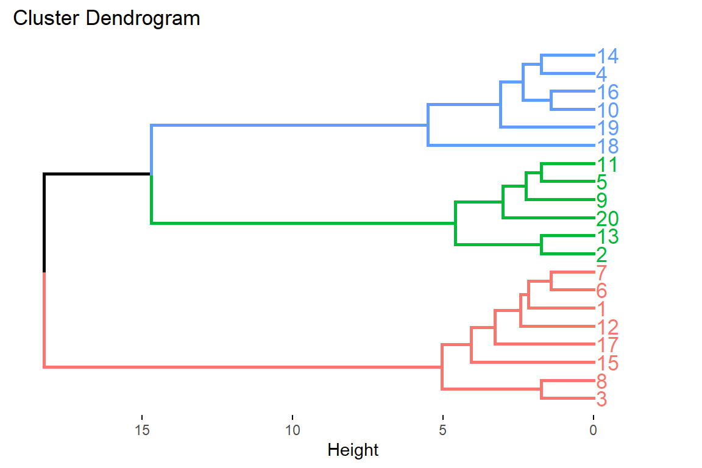
Kassambara összefoglalja az optimális klaszterszám meghatározásának 3 leggyakoribb módszerét (Determining The Optimal Number Of Clusters: 3 Must Know Methods). A jamovi snowCluster / K-means Clustering menüpontja alatt az egyik eljárás, a gap-módszer elérhető.
A három módszer a
- könyök módszer (elbow method),
- sziluett módszer (silhouette method) és a
- gap-statisztika módszer (gap statistic method).
7.1.3.1 Könyök módszer
Ismert, hogy a K-közép klaszterezési eljárás mögötti alapötlet az, hogy a klasztereket úgy határozzuk meg, hogy a teljes klaszteren belüli variabilitás (a teljes klaszteren belüli négyzetösszeg, WSS) minimális legyen. A teljes WSS a klaszterezés tömörségét méri, és azt szeretnénk, hogy az a lehető legkisebb legyen.
A könyök módszer a teljes WSS-t a klaszterek számának függvényében vizsgálja: az az optimális klaszterszám, amikor már egy újabb klaszter hozzáadása nem javítja számottevően a teljes WSS-t.
A klaszterek optimális száma a következőképpen határozható meg:
- Valamely klaszterezési algoritmust (például K-közép klaszterezés) futtatása \(k\) különböző értékeire. Például \(k\) értéke 1-től 10-ig fut.
- Minden \(k\) esetében kiszámítjuk a teljes WSS értéket.
- Ábrázoljuk a WSS görbéjét a \(k\) klaszterek számának megfelelően.
- A könyök elhelyezkedését az ábrán általában a klaszterek megfelelő számát jelenti.
7.1.3.2 Átlagos sziluett módszer
Az átlagos sziluett megközelítés a klaszterezés minőségét méri. Minden egyes \(i\) megfigyelési egységre kiszámítható a sziluett szélessége, amely az \(S_i=(b_i−a_i)/max(a_i,b_i)\) képlettel számolható. A fenti képletben
- \(a_i\) az \(i\)-t tartalmazó klaszteren belül az átlagos klaszteren belüli távolság, azaz a klaszteren belüli egyes pontok közötti átlagos távolság
- \(b_i\) az \(i\) és a tőle minimális távolságra lévő (szomszédos) klaszter távolsága (\(i\) és egy másik klaszter távolsága: \(i\) és másik klaszterben lévő pontok átlagos távolsága).
Az \(S_i\) értéke -1 és +1 közötti lehet:
- A nagy \(S_i\)-értékkel (majdnem 1) végzett megfigyelések nagyon jól klaszterezettek.
- A kis \(S_i\) (körülbelül 0) azt jelenti, hogy a megfigyelés két klaszter között van.
- A negatív \(S_i\) értékkel rendelkező megfigyelések valószínűleg rossz klaszterbe kerültek.
Az átlagos sziluett módszer a megfigyelések átlagos sziluettjét számítja ki különböző \(k\) értékeihez. A \(k\) klaszterek optimális száma az, amely maximalizálja az átlagos sziluettet a \(k\) lehetséges értékeinek tartományában.
Az algoritmus hasonló a könyök módszerhez, és a következőképpen számítható ki:
- Valamely klaszterezési algoritmust (például K-közép klaszterezés) futtatása \(k\) különböző értékeire. Például \(k\) értéke 1-től 10-ig fut.
- Minden \(k\) esetében kiszámítjuk a megfigyelések átlagos sziluettjét (
avg.sil). - Ábrázoljuk az
avg.silgörbéjét a klaszterek száma szerint (\(k\)). - A görbe maximum helyét tekintjük megfelelő számú klaszternek.
7.1.3.3 A gap-statisztika módszer
A gap-statisztikát R. Tibshirani, G. Walther és T. Hastie tette közzé 2001-ben. A megközelítés bármely klaszterezési módszerre alkalmazható.
A gap-statisztika összehasonlítja a klaszteren belüli összesített variabilitást az adatok null referenciaeloszlása mellett várt értékévek, különböző \(k\)-értékeknél. Az optimális klaszterek becslése olyan érték lesz, amely maximalizálja a gap-statisztikát (azaz a legnagyobb gap-statisztikát eredményezi). Ilyenkor a klaszterezési struktúra messze van a pontok véletlenszerű egyenletes eloszlásától.
Az algoritmus a következőképpen működik:
- Klaszterezzük a megfigyelt adatokat úgy, hogy a klaszterek számát \(k=1, \dots, k_{max}\) értékkel változtatjuk, és számítsuk ki a \(W_k\) klasztereken belüli összvariabilitást.
- Generáljunk B referencia adatkészletet véletlenszerű egyenletes eloszlással. Végezzünk klaszterezést ezen a referenciaadatkészleten változó számú klaszterrel \(k=1, \dots, k_{max}\) és számítsuk ki a megfelelő teljes klasztereken belüli összvariabilitást (\(W_{kb}\)).
- Számítsuk ki a becsült gap-statisztikát: \(Gap(k)=\frac{1}{B}\sum_{b=1}^Blog(W_{kb})−log(W_k)\). Számítsuk ki a statisztika szórását is.
1.Válasszuk meg a klaszterek számát a legkisebb olyan \(k\)-ra, amely kielégíti a következő feltételt: \(Gap(k)\geq Gap(k+1)−s_{k+1}\).
A fenti 3 módszerhez tartozó ábra a {factoextra} csomag fviz_nbclust() függvényével is megjeleníthető.
library(factoextra)
# Elbow method
fviz_nbclust(x = fogyaszto, kmeans, method = "wss") + geom_vline(xintercept = 4,
linetype = 2) + labs(subtitle = "Elbow method")
# Silhouette method
fviz_nbclust(x = fogyaszto, kmeans, method = "silhouette") + labs(subtitle = "Silhouette method")
# Gap statistic nboot = 50 to keep the function speedy. recommended
# value: nboot= 500 for your analysis. Use verbose = FALSE to hide
# computing progression.
set.seed(123)
fviz_nbclust(x = fogyaszto, kmeans, nstart = 25, method = "gap_stat", nboot = 50) +
labs(subtitle = "Gap statistic method")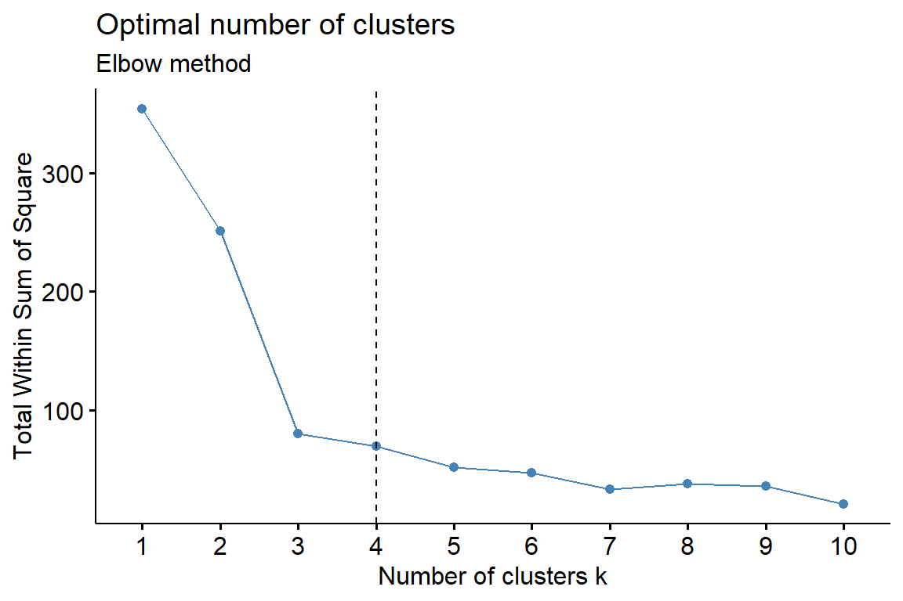
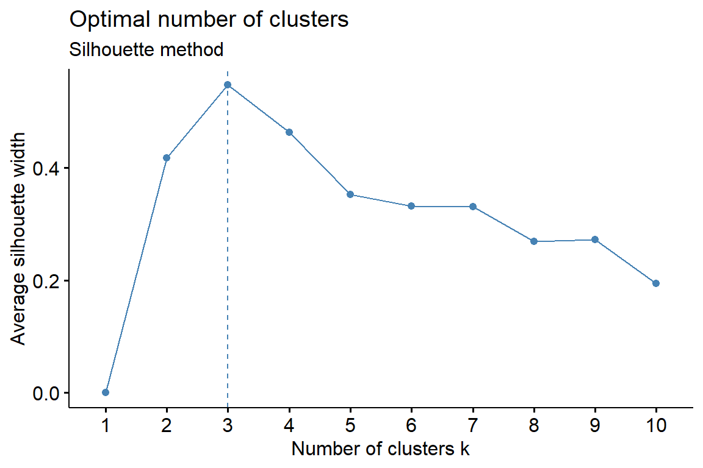
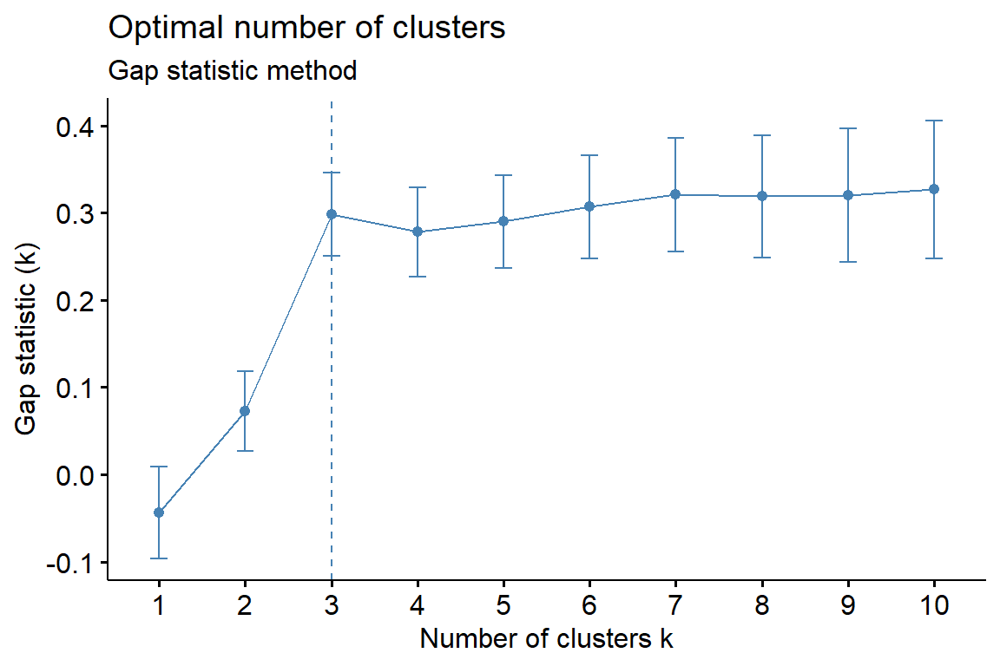
A könyök módszer 4, a sziluett módszer és a gap-statisztikán alapuló módszer 3 klasztert tart optimálisnak.
7.1.4 5. A klaszterek értelmezése és jellemzése
A klaszterek értelmezését és jellemzését a klasztercentroidok (átlagok) értelmezésével végezzük. A centroidokon a klaszterekbe tartozó megfigyelési egységeknek a az összes változó alapján számított átlagát értjük. A centroidok lehetővé teszik, hogy mindegyik klaszterhez egy nevet vagy címkét rendeljünk.
Az 1. klaszteren viszonylag magas az értéke az 1. változónak (a vásárlás szórakozás) és a 3. változónak (a vásárlást étteremlátogatással köti össze). Alacsony az értéke az 5. változónak (nem érdekel a vásárlás). Az 1. klaszter a “Szórakozáskedvelő, érdeklődő vásárlók” névvel jelölhető. Ez a klaszter az 1, 3, 6, 7, 8, 12, 15 és a 17 eseteket tartalmazza. A 2. klaszter éppen az előző klaszter ellentettje, mivel alacsony az 1. és a 3. változó értéke, és magas az 5. változó átlaga, ezért “Apatikus vásárlónak” nevezhetjük el. A 2. klaszter tagjait a 2, 5, 9, 11, 13 és 20 elemek alkotják. A 3. klaszternél a 2. változó (a vásárlás megterheli a pénztárcát), a 4. változó (vásárláskor a legjobb vételt akarom csinálni) és a 6. változó (az árak összehasonlításával sokat lehet megtakarítani) értéke magas. Ennek következtében ez a klaszter a “Takarékos vásárlók” nevet kapta. A klasztereket a 4, 10, 14, 16, 18 és 19 eseteket foglalja magában.
Gyakran segít a klaszterek értelmezésében és jellemzésében olyan változók bevonása, amelyeket nem használtunk fel a klaszterelemzésben. Ezek lehetnek például demográfiai adatok.
7.1.5 6. A klaszterelemzés megbízhatóságának és érvényességének ellenőrzése
A klasztermegoldás megbízhatóságát és érvényességét is ellenőrizni kell. Ezek igen komplex eljárások, és teljes mértékben nem igazolhatók. A következő eljárások jól használhatók a klasztereredmények minőségének értékelésére.
- A klaszterelemzést elvégezzük ugyanazokkal az adatokkal, de más távolságmértéket használunk. A két mérték alapján kapott eredményeket összehasonlítjuk.
- Különböző klasztereljárásokat alkalmazunk, és összehasonlítjuk az eredményeket.
- Az adatokat véletlenszerűen két csoportra osztjuk. Mindkét részre elvégezzük a klaszterelemzést. Összehasonlítjuk a a két alminta klaszterátlagait. Véletlenszerűen elhagyunk változókat, és a klaszterelemzést a csökkentett számú változók alapján végezzük el. Hasonlítsuk össze az eredményeket a teljes változókészlettel kapott eredménnyel.
- A nem hierarchikus klaszterelemzésnél a megoldás az esetek adatbázisban elfoglalt sorrendjétől is függhet. Futtassuk az elemzést az esetek különböző sorrendjével, amíg a megoldás nem stabilizálódik.
table(fogyaszto$group_1, fogyaszto$group_2)
#>
#> 1 2 3
#> 1 0 8 0
#> 2 0 0 6
#> 3 6 0 0A fenti kétdimenziós gyakorisági táblázatból kiolvasható, hogy a hierarchikus klaszterelemzés és a K-középpontú klaszterelemzés ugyanazt az eredményt szolgáltatja (kivéve a csoportok elnevezését).
7.2 Példa: Vállalatok vizsgálata
A következő problémában különböző vállalatokat próbálunk meg klaszterezni. A vállalatokat számtalan jellemző mentén mérhetjük, vizsgálhatjuk, ezáltal többféleképpen is csoportosíthatjuk őket. A csoportosítás alapjául mi most a vállalat nagyságát, a hatalmi távolságot és a vállalat szemléletében jelen levő konzervativizmus mértékét választottuk. Az adatok, ahogyan az az 5.27. R-forráskódon is látható.
vallalat <- rio::import(file = "adat/klaszter_vallalatok.xlsx")
str(vallalat)
#> 'data.frame': 10 obs. of 4 variables:
#> $ NEV : chr "A vallalat" "B vallalat" "C vallalat" "D v...
#> $ MERET : num 75 1500 2000 21 1000 900 1000 35 120 100
#> $ HATALMIT: num 1 10 11 3 10 11 10 4 2 5
#> $ KONZERVA: num 2 9 8 4 9 8 11 3 2 4
psych::headTail(vallalat)
#> NEV MERET HATALMIT KONZERVA
#> 1 A vallalat 75 1 2
#> 2 B vallalat 1500 10 9
#> 3 C vallalat 2000 11 8
#> 4 D vallalat 21 3 4
#> ... <NA> ... ... ...
#> 7 G vallalat 1000 10 11
#> 8 H vallalat 35 4 3
#> 9 I vallalat 120 2 2
#> 10 J vallalat 100 5 4Végezzünk hierarchikus klaszterelemzést. Ehhez először a távolságmátrixot határozzuk meg. Ehhez első lépésként másoljuk a sornevekbe a vállalatok nevét, mert akkor a kapott dendrogram levelein a vállalatok neveit fogjuk látni és így sokkal áttekinthetőbb ábrát fogunk kapni és könnyebben tudjuk azonosítani az egyes klasztereket.
# a vállalatnevek a sornevekbe íródnak
rownames(vallalat) <- vallalat$NEVSzámítsuk ki a távolságmátrixot, használjunk Euklideszi távolságot.
tavolsagmatrix <- dist(vallalat[2:4], method = "euclidean")
print(tavolsagmatrix, digits = 1)
#> A vallalat B vallalat C vallalat D vallalat E vall...
#> B vallalat 1425 ...
#> C vallalat 1925 500 ...
#> D vallalat 54 1479 1979 ...
#> E vallalat 925 500 1000 979 ...
#> F vallalat 825 600 1100 879 ...
#> G vallalat 925 500 1000 979 ...
#> H vallalat 40 1465 1965 14 ...
#> I vallalat 45 1380 1880 99 ...
#> J vallalat 25 1400 1900 79 ...
#> F vallalat G vallalat H vallalat I vallalat
#> B vallalat
#> C vallalat
#> D vallalat
#> E vallalat
#> F vallalat
#> G vallalat 100
#> H vallalat 865 965
#> I vallalat 780 880 85
#> J vallalat 800 900 65 20A távolságmátrix birtokában már futtathatunk egy klaszteranalízist, az egyszerű lánc módszert használjuk a klaszterképzéshez.
klaszter <- hclust(tavolsagmatrix, method = "single")
plot(klaszter)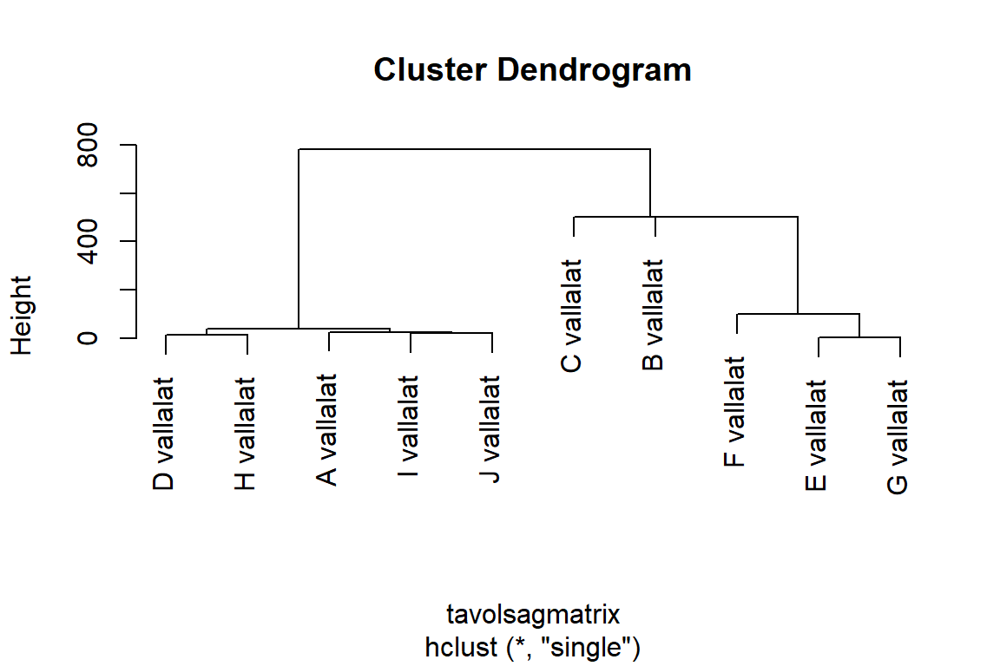
A fenti dendrogramon látható, hogy alapvetően két nagy csoportja van a vizsgált vállalatoknak. Az egyikbe tartoznak a D, H, A, I és a J vállalatok, míg a másikba az F, E, G és egy kicsit távolabb a B és a C. A B és a C vállalat akár önálló klasztert is alkothat.
klaszter$merge # az összevonások lépései: az egyes lépésekben miket vont össze: negatív szám elem, pozitív klaszter
#> [,1] [,2]
#> [1,] -5 -7
#> [2,] -4 -8
#> [3,] -9 -10
#> [4,] -1 3
#> [5,] 2 4
#> [6,] -6 1
#> [7,] -2 6
#> [8,] -3 7
#> [9,] 5 8
klaszter$height # az egyes összevonások milyen távolság esetén történtek meg
#> [1] 2.00000 14.07125 20.32240 25.39685 40.12481 100.01000
#> [7] 500.00000 500.00200 780.07500
cbind(klaszter$merge, klaszter$height) # együtt a két fenti információ
#> [,1] [,2] [,3]
#> [1,] -5 -7 2.00000
#> [2,] -4 -8 14.07125
#> [3,] -9 -10 20.32240
#> [4,] -1 3 25.39685
#> [5,] 2 4 40.12481
#> [6,] -6 1 100.01000
#> [7,] -2 6 500.00000
#> [8,] -3 7 500.00200
#> [9,] 5 8 780.07500A fenti elemzés jamovi-ban a snowCluster / Hierarchical Clustering vagy snowCluster / Clustering Dendrogram menüpontjaival is elvégezhető.
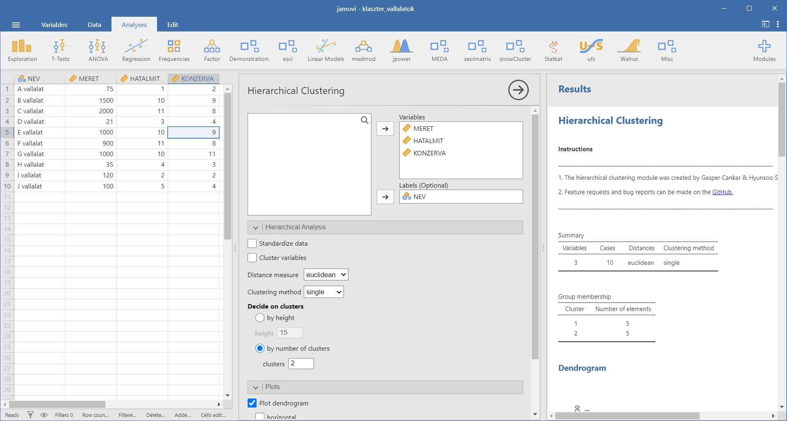
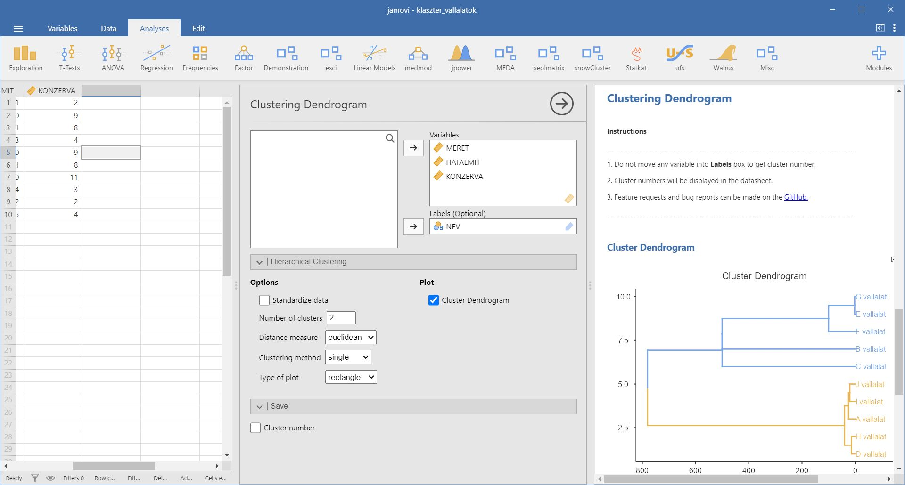
7.3 Példa: Étteremlátogatással kapcsolatos attitűdök vizsgálata
A vásárláshoz hasonlóan az étteremlátogatás is viszonylag megosztja az embereket. Vannak, akik felesleges kiadásnak tartják, és inkább otthon, saját maguk főznek. Vannak, akik igyekeznek kímélni magukat az ilyesfajta házimunkáktól - vagy egyszerűen nem tudnak főzni - és ebből kifolyólag az éttermek rendszeres látogatói. Megint mások csupán praktikus okokból járnak étterembe: ünnepek alkalmával, baráti összejövetelekkor stb. A következőkben a klaszteranalízis segítségével az étteremlátogatással kapcsolatos attitűdöket fogjuk szemügyre venni.
A vizsgálathoz szükséges adatok a klaszter_etteremlatogatas.xlsx állományban találhatok.
etterem <- rio::import(file = "adat/klaszter_etteremlatogatas.xlsx")
str(etterem)
#> 'data.frame': 20 obs. of 8 variables:
#> $ V1: num 6 2 7 4 1 6 5 7 2 3 ...
#> $ V2: num 4 3 2 6 3 4 3 3 4 5 ...
#> $ V3: num 7 1 6 4 2 6 6 7 3 3 ...
#> $ V4: num 3 4 4 5 2 2 3 4 3 6 ...
#> $ V5: num 2 5 1 3 6 3 3 1 6 4 ...
#> $ V6: num 4 4 3 6 4 4 4 4 3 6 ...
#> $ V7: num 2 5 1 3 7 3 3 1 6 4 ...
#> $ V8: num 5 4 3 6 4 4 5 4 3 6 ...
psych::headTail(etterem)
#> V1 V2 V3 V4 V5 V6 V7 V8
#> 1 6 4 7 3 2 4 2 5
#> 2 2 3 1 4 5 4 5 4
#> 3 7 2 6 4 1 3 1 3
#> 4 4 6 4 5 3 6 3 6
#> ... ... ... ... ... ... ... ... ...
#> 17 4 4 7 2 2 5 2 5
#> 18 3 7 2 6 4 3 4 3
#> 19 4 6 3 7 2 7 2 7
#> 20 3 3 2 4 7 2 5 3Az egyes itemek a következők:
- V1: Ha csak tehetem, étteremben ebédelek.
- V2: Munkahelyemen szívesen választom a munkahelyi étkezdét.
- V3: Szerintem éttermek nélkül nem is lenne kerek a világ.
- V4: Családi alkalmak, ünnepek esetén szívesen étkezem étteremben.
- V5: Szerintem étteremben étkezni merő pénzpocséklás.
- V6: Időnként szívesen étkezem házon kívül.
- V7: Előnyben részesítem a saját főztömet.
- V8: Szívesen járok korrekt árakkal dolgozó éttermekbe.
Végezzünk K-közép klaszterelemzést!
Első lépésként most is a csoporton belüli négyzetösszegeket ábrázoljuk a lehetséges klaszterszámok függvényében, hogy el tudjuk dönteni, hány klaszteres megoldás lenne a megfelelő az adatokra.
n <- length(etterem$V1)
wss1 <- (n - 1) * sum(apply(etterem, 2, var)) # teljes variabilitás
wss <- numeric(0)
# 2-6 klaszteres megoldás kipróbálása
for (i in 2:6) {
W <- sum(kmeans(etterem, i)$withinss)
wss <- c(wss, W)
}
wss <- c(wss1, wss)
plot(1:6, wss, type = "l", xlab = "Csoportok száma", ylab = "Csoporton belüli
négyzetösszegek",
lwd = 2)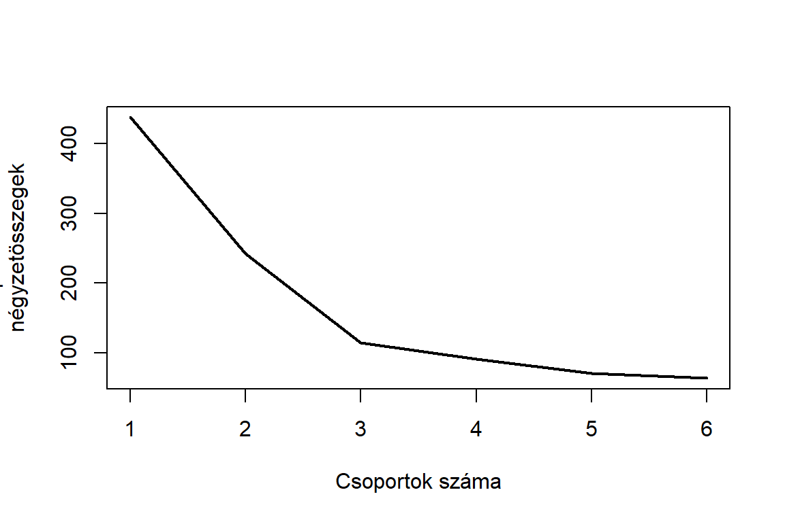
A fenti ábrán láthatjuk, hogy a hármas értéknél van éles törés a görbén, ez alapján a háromklaszteres megoldást fogjuk vizsgálni K-középpontú klaszteranalízissel.
kkozep <- kmeans(x = etterem, centers = 3)
kkozep
#> K-means clustering with 3 clusters of sizes 7, 5, 8
#>
#> Cluster means:
#> V1 V2 V3 V4 V5 V6 V7
#> 1 2.000 3.571429 1.857143 3.857143 5.285714 3.285714 5.142857
#> 2 3.600 5.600000 3.600000 6.400000 3.400000 6.600000 3.400000
#> 3 6.125 3.625000 6.000000 3.000000 2.000000 4.000000 2.000000
#> V8
#> 1 3.428571
#> 2 6.600000
#> 3 4.250000
#>
#> Clustering vector:
#> 1 2 3 4 5 6 7 8 9 10 11 12 13 14 15 16 17 18 19 20
#> 3 1 3 2 1 3 3 3 1 2 1 3 1 2 3 2 3 1 2 1
#>
#> Within cluster sum of squares by cluster:
#> [1] 52.85714 17.60000 44.25000
#> (between_SS / total_SS = 73.8 %)
#>
#> Available components:
#>
#> [1] "cluster" "centers" "totss" "withinss"
#> [5] "tot.withinss" "betweenss" "size" "iter"
#> [9] "ifault"
kkozep$betweenss
#> [1] 323.2429A fenti eredmény a klaszteranalízis eredményét mutatja. Az első sor (K-means clustering with 3 clusters of sizes 7,5,8) arról ad információt, hogy háromklaszteres megoldásunk van, melyek mérete 7, illetve 5 és 8 elemszám. Hogy az egyes elemek melyik klaszterbe esnek, arról a Clustering vector ad információt. Az első sor az egyes elemeket, a második pedig a csoporttagságot mutatja.
A Cluster means az egyes klaszterek átlagos tagjának, centroidjának a jellemzőit mutatják. Az első klaszter átlagos tagja kiválóan érzi magát éttermek nélkül is, csak pénzpocséklásnak tartja azokat és inkább saját maga főz. A második klaszter átlagos alkalomadtán jár éttermekben (családi ünnepek esetén például), esetleg a munkahelyi étkezdét használja, előnyben részesíti a mérsékeltebb árakat. Míg a harmadik klaszter átlagos tagja szívesen jár éttermekbe, nem is nagyon szeret főzni.
A Within cluster sum of squares by cluster értékei a klaszteren belüli eltérések négyzetösszegét mutatja.
Az eredmények alapján vannak olyan emberek, akik szeretnek étterembe járni, az számukra egy életforma, s vannak olyanok, akik az otthoni konyhát részesítik előnyben. Ugyanakkor vannak megfontoltabb emberek is, akik igyekeznek energiájukkal takarékoskodni, ezért munkahelyen vagy valamilyen nagyobb összejövetel esetén szívesen étkeznek házon kívül.
A fenti K-közép klaszterelemzés jamovi-ban is elvégezhető a snowCluster / K-means Clustering menüponttal.
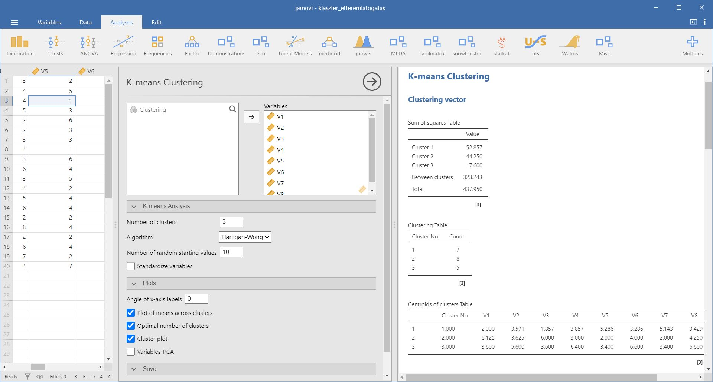
7.4 Példa: Vásárlói attitűdök vizsgálata
Vásárolni mindenki szokott. Van, akinek szenvedélye a vásárlás, mások, pedig ha csak lehet, kerülik az üzleteket. Ebben a példában annak fogunk utánajárni, hogy milyen tipikus vásárlási attitűdök vannak. A vizsgálathoz szükséges adatokat a klaszter_vasarloi_attitudok.xlsx tartalmazza.
vasarlok <- rio::import(file = "adat/klaszter_vasarloi_attitudok.xlsx")
str(vasarlok)
#> 'data.frame': 20 obs. of 6 variables:
#> $ V1: num 6 2 7 4 1 6 5 7 2 3 ...
#> $ V2: num 4 3 2 6 3 4 3 3 4 5 ...
#> $ V3: num 7 1 6 4 2 6 6 7 3 3 ...
#> $ V4: num 3 4 4 5 2 2 3 4 3 6 ...
#> $ V5: num 2 5 1 3 6 3 3 1 6 4 ...
#> $ V6: num 4 4 3 6 4 4 4 4 3 6 ...
psych::headTail(vasarlok)
#> V1 V2 V3 V4 V5 V6
#> 1 6 4 7 3 2 4
#> 2 2 3 1 4 5 4
#> 3 7 2 6 4 1 3
#> 4 4 6 4 5 3 6
#> ... ... ... ... ... ... ...
#> 17 4 4 7 2 2 5
#> 18 3 7 2 6 4 3
#> 19 4 6 3 7 2 7
#> 20 3 3 2 4 7 2A fenti outputban lévő változók jelentése a következő:
- V1: Általában igyekszem diszkont áruházakban vásárolni.
- V2: Imádok vásárolgatni.
- V3: Mindig figyelem az árleszállításokat.
- V4: A vásárlás számomra szinte egy hobbi.
- V5: Ha csak tehetem, nem én vásárolok.
- V6: Szívesen járom az üzleteket baráti társaságban.
Első lépésként a csoporton belüli négyzetösszegeket ábrázoljuk a lehetséges klaszterszámok függvényében, hogy el tudjuk dönteni, hány klaszteres megoldás lenne a megfelelő az adatokra.
n <- length(vasarlok$V1)
wss1 <- (n - 1) * sum(apply(vasarlok, 2, var))
wss <- numeric(0)
for (i in 2:6) {
W <- sum(kmeans(vasarlok, i)$withinss)
wss <- c(wss, W)
}
wss <- c(wss1, wss)
plot(1:6, wss, type = "l", xlab = "Csoportok száma", ylab = "Csoporton belüli
négyzetösszegek",
lwd = 2)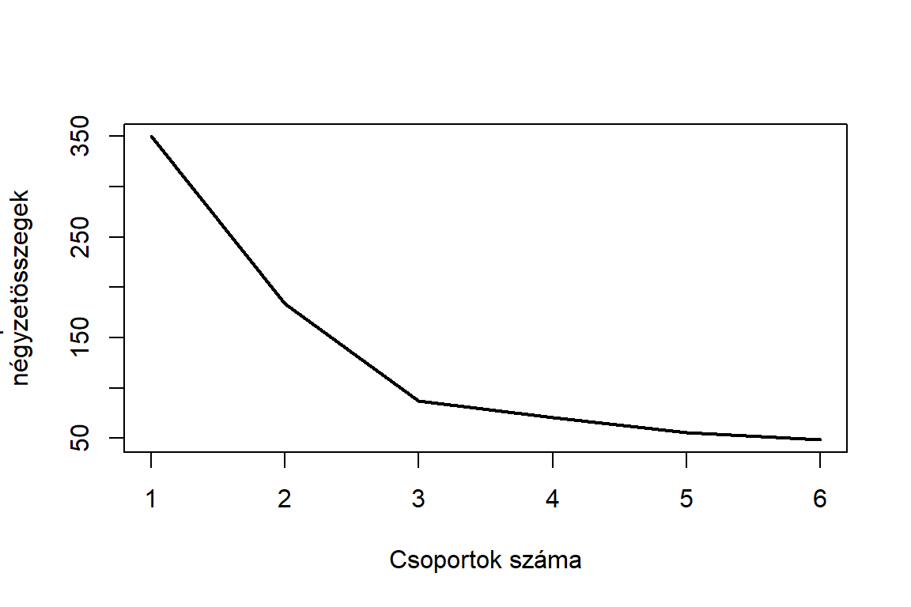
A fenti képen láthatjuk, hogy a hármas értéknél van törés a görbén, ez alapján a háromklaszteres megoldást fogjuk vizsgálni K-középpontú klaszteranalízissel.
kkozep <- kmeans(vasarlok, 3)
kkozep
#> K-means clustering with 3 clusters of sizes 6, 8, 6
#>
#> Cluster means:
#> V1 V2 V3 V4 V5 V6
#> 1 3.500000 5.833333 3.333333 6.333333 3.5 6.000000
#> 2 6.125000 3.625000 6.000000 3.000000 2.0 4.000000
#> 3 1.833333 3.000000 1.833333 3.500000 5.5 3.333333
#>
#> Clustering vector:
#> 1 2 3 4 5 6 7 8 9 10 11 12 13 14 15 16 17 18 19 20
#> 2 3 2 1 3 2 2 2 3 1 3 2 3 1 2 1 2 1 1 3
#>
#> Within cluster sum of squares by cluster:
#> [1] 28.50 36.75 22.00
#> (between_SS / total_SS = 75.1 %)
#>
#> Available components:
#>
#> [1] "cluster" "centers" "totss" "withinss"
#> [5] "tot.withinss" "betweenss" "size" "iter"
#> [9] "ifault"
kkozep$totss
#> [1] 350.05A fenti output a klaszteranalízis eredményét mutatja. Az első sor (K-means clustering with 3 clusters of sizes 8,6,6) arról ad információt, hogy háromklaszteres megoldásunk van, melyek mérete 8, illetve 6, 6 elemszám. Hogy az egyes elemek melyik klaszterbe esnek, arról a Clustering vector ad információt. Az első sor az egyes elemeket, a második pedig a csoporttagságot mutatja.
A Cluster means az egyes klaszterek átlagos tagjának, centroidjának a jellemzőit mutatják. Az első klaszter átlagos tagja igyekszik diszkontáruházakban és árleszállításokon vásárolni, minél több pénzt megtakarítani. A második klaszter átlagos tagja ha csak teheti, másokkal vásároltat be. Míg a harmadik klaszter átlagos tagja szenvedélyes vásárló, baráti társaságokkal is szívesen járja az üzleteket.
A Within cluster sum of squares by cluster értékei a klaszteren belüli eltérések négyzetösszegét mutatja.
Az eredmények alapján vannak olyan emberek, akik nem szeretnek vásárolni, s vannak olyanok, akiknek egyfajta hobbi a vásárlás. Ugyanakkor vannak megfontoltabb emberek is, akik igyekeznek takarékossági szempontokat is figyelembe venni, és minél olcsóbban elintézni a bevásárlásokat.
A fenti K-közép klaszterelemzés jamovi-ban is elvégezhető a snowCluster / K-means Clustering menüponttal.
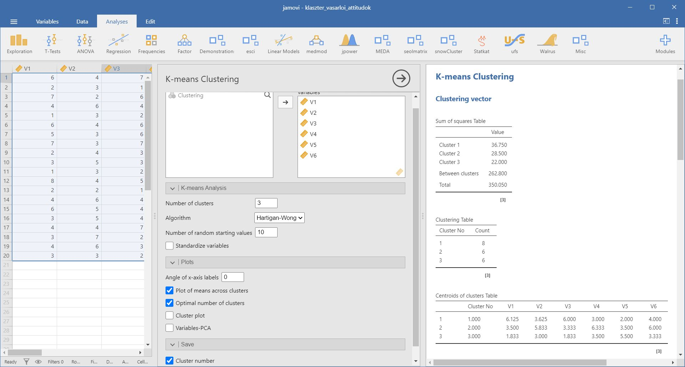
7.5 Példa: Csokoládémárkák vizsgálata
A klaszteranalízissel elemzett jelen problémában csokoládémárkákat vizsgálunk. Összesen tíz csokimárkát ítéltek meg a személyek a csoki nagysága, krémességének és töménységének tekintetében. Azt fogjuk megvizsgálni, hogy mely csokoládék állnak a vizsgálati személyek szerint közel egymáshoz. Ennek ismerete hasznos lehet marketing szempontból - például mely csokoládékat érdemes közel tenni egymáshoz a polcon.
Az adatokat a klaszter_csokolademarkak.xlsx tartalmazza.
csokolade <- rio::import(file = "adat/klaszter_csokolademarkak.xlsx")
str(csokolade)
#> 'data.frame': 10 obs. of 4 variables:
#> $ CSOKI : chr "Boci" "Milka" "Tibi" "Balaton" ...
#> $ NAGYSAG: num 10 10 9 4 4 3 2 5 5 4
#> $ KREMES : num 9 10 8 5 2 7 5 7 7 8
#> $ TOMENY : num 7 8 6 6 4 7 7 8 9 9
psych::headTail(csokolade)
#> CSOKI NAGYSAG KREMES TOMENY
#> 1 Boci 10 9 7
#> 2 Milka 10 10 8
#> 3 Tibi 9 8 6
#> 4 Balaton 4 5 6
#> ... <NA> ... ... ...
#> 7 Kapuciner 2 5 7
#> 8 Mars 5 7 8
#> 9 Snickers 5 7 9
#> 10 Sportszel 4 8 9Most sem távolságmátrixszal dolgozunk, hanem az „eredeti” változókkal. Az adatokból számított távolságmátrixot természetesen elkészíthetjük az R segítségével is. Ehhez első lépésként a CSOKI változót másoljuk át az adatbázis sorneveibe, mert így a kapott dendrogram levelein a csokoládék neveit fogjuk látni, nem pedig számokat. Ezáltal sokkal áttekinthetőbb ábrát fogunk kapni és könnyebben tudjuk azonosítani az egyes klasztereket.
rownames(csokolade) <- csokolade$CSOKIEzután kiszámíttathatjuk a távolságmátrixot az adatokra, használjuk az Euklideszi távolságot.
tavolsagmatrix <- dist(csokolade[2:4])
print(tavolsagmatrix, digits = 1)
#> Boci Milka Tibi Balaton Müzliszel 3-bit Kapuciner Mars
#> Milka 1
#> Tibi 2 3
#> Balaton 7 8 6
#> Müzliszel 10 11 8 4
#> 3-bit 7 8 6 2 6
#> Kapuciner 9 9 8 2 5 2
#> Mars 5 6 5 3 6 2 4
#> Snickers 6 6 5 4 7 3 4 1
#> Sportszel 6 6 6 4 8 2 4 2
#> Snickers
#> Milka
#> Tibi
#> Balaton
#> Müzliszel
#> 3-bit
#> Kapuciner
#> Mars
#> Snickers
#> Sportszel 1A távolságmátrix birtokában már futtathatunk egy klaszteranalízist, az egyszerű lánc módszert használva a klaszterképzéshez.
klaszter <- hclust(tavolsagmatrix, method = "single")
plot(klaszter)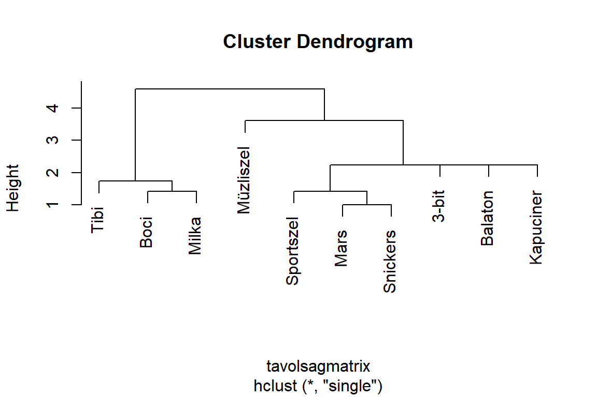
klaszter$merge
#> [,1] [,2]
#> [1,] -8 -9
#> [2,] -1 -2
#> [3,] -10 1
#> [4,] -3 2
#> [5,] -4 -7
#> [6,] -6 5
#> [7,] 3 6
#> [8,] -5 7
#> [9,] 4 8
klaszter$height
#> [1] 1.000000 1.414214 1.414214 1.732051 2.236068 2.236068 2.2...
#> [8] 3.605551 4.582576Láthatjuk, hogy a klaszterek kialakítása 9 lépésben történt és legutolsó elemet 4,58-as távolságnál vontuk be a klaszterbe.
A dendrogram látható, hogy alapvetően két nagy csoportja van a vizsgált csokoládéknak. Az egyikbe tartoznak a táblás csokoládék (Tibi, Milka és a Boci), míg a másikba a szeletes csokik. Az utóbbiba vonta be a módszer a müzliszeletet is, bár meglehetősen távol van a többi csokoládétól.
A fenti elemzés jamovi-ban a snowCluster / Hierarchical Clustering vagy snowCluster / Clustering Dendrogram menüpontjaival is elvégezhető.
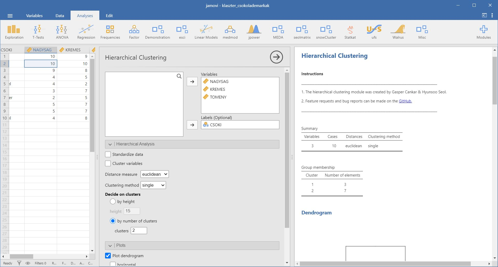
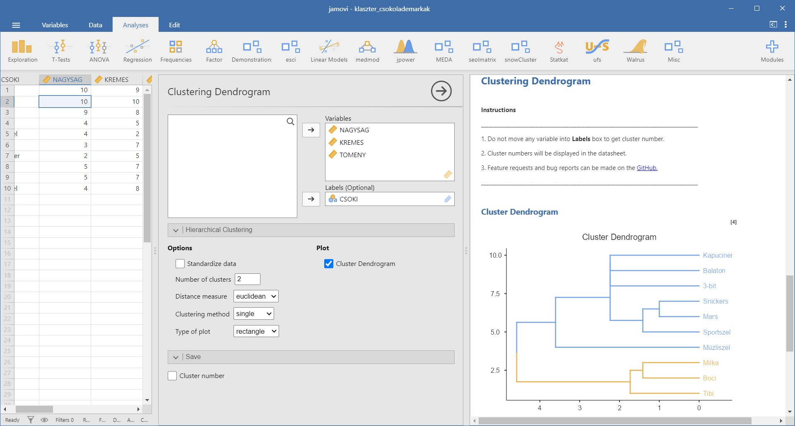